System Setup
Attention
In this section we are only talking about RBFE, this means we do always have a complex and a waterbox environment. When using RSFE, the only change would be that there is only the waterbox environment necessary, the corresponding vacuum environment for the gas phase will be created by \(\texttt{TRANSFORMATO}\) automatically.
After successfully installing \(\texttt{TRANSFORMATO}\), you can now set up your first system. For this, you require three items:
The output of CHARMM-GUI ‘s solution builder for your ligand - solvated once at its position within the protein-ligand complex and once in a pure waterbox.
A config.yaml which describes your general simulation parameters.
A submit.ipynb (or just standard .py) that generates your intermediate states.
Finally, to actually analyze your simulations and calculate the resulting free energies, an analysis.py script - this is covered on the Trajectory Analysis page.
The overall structure on how everything needs to be set up and where which file has to be stored is given in the Figure below. During the following steps, this Figure might be interesting to look at.
Step 1 – creating Systems using CHARMM-GUI
First, one needs input files for the physical endstates. It is strongly encouraged to use CHARMM-GUI (specifically the solution builder) to create them. For running CHARMM-GUI you need a pdb file of your ligand as well as a pdb file of your ligand bound to the protein. In addition, you might need to provide CHARMM-GUI with a sdf or mol2 file of your ligand. When you created the CHARMM-GUI folders, per ligand one for the waterbox and one for the complex you need to do the following:
Important
In the last step of the CHARMM-GUI solution builder, make sure to check the box OpenMM or CHARMM/OpenMM
depending on which engine you want to use later for your production runs (OpenMM is installed by default in
the fep environment).
Create a folder called your-structure-1 for your first structure
Take the CHARMM-GUI output folder (called something like charmm-gui-4842148) for your solvated ligand-protein complex, move it to this folder and rename it into complex
Take the CHARMM-GUI output folder for your solvated ligand in the waterbox, move it to this folder and rename it into waterbox
Do the same with your second, third, fourth… etc. structure
Run the equillibration part of the provided simulation input. An equilibrated system (and the generated .rst file) are necessary for transformato.
As indictated in the Figure above, your files should be strucred the following way:
for the waterbox of structure 1:
your-structure-1/waterbox/openmmcontains among other files important psf and crd file as well as ayour-structure-1/waterbox/CHARMM-GUI-resnamedirectory contains among other files the sdf, prm and rtf file
for the complex of structure 1:
your-structure-1/complex/openmmcontains among other files important psf and crd file as well as ayour-structure-1/complex/CHARMM-GUI-resnamedirectory contains among other files the sdf, prm and rtf file
The same applies for all other ligands (structures) of interest.
For expert users only!
It is not strictly necessary to use CHARMM-GUI to solvate your system. You may build and solvate your system yourself. In this case, however, you will also need to supply proper parameter files along with input scripts. For each ligand, you need to provide in the respective folder a psf and crd for the ligand only and bound to the protein, as well as a folder named after the ligands resname, containing sdf, prm and rtf file of the ligand (you can generate this yourself using CGenFF).
Step 2 – modifying the yaml file
The config.yaml provides all information necessary for setting up a mutation between two ligands. It contains:
The names of the folders containing the complex and waterbox folder
Simulation parameters, such as simulation step and length
Additional parameters such as restraints
Let’s take a look at a complete config.yaml:
################
system:
################
structure1:
name: "vim2_zn148"
tlc: "LIG"
waterbox:
dirname: "waterbox"
psf_file_name: "step3_input"
crd_file_name: "step3_input"
rst_file_name: "step4_equilibration"
simulation_parameter: "step5_production.inp"
intermediate-filename: "lig_in_waterbox"
complex:
dirname: "complex"
psf_file_name: "step3.input"
crd_file_name: "step3.input"
rst_file_name: "step4_equilibration"
simulation_parameter: "step5_production.inp"
intermediate-filename: "lig_in_complex"
structure2:
name: "vim2_zn222"
tlc: "LIG"
waterbox:
dirname: "waterbox"
psf_file_name: "step3_input"
crd_file_name: "step3_input"
rst_file_name: "step4_equilibration"
simulation_parameter: "step5_production.inp"
intermediate-filename: "lig_in_waterbox"
complex:
dirname: "complex"
psf_file_name: "step3_input"
crd_file_name: "step3_input"
rst_file_name: "step4_equilibration"
simulation_parameter: "step5_production.inp"
intermediate-filename: "lig_in_complex"
################
simulation:
################
parameters:
nstep: 1250000
nstdcd: 1000
nstout: 1000
cons: HBond
dt: 0.004
switch: "vfswitch"
mini_nstep: 1000
GPU: True
workload-manager: "slurm"
free-energy-type: "rbfe"
################
solvation:
################
steps_for_equilibration: 1000
The system container contains the setup information from your structure directories. Most importantly, the name parameter must be the folder name of that structure (the one containing the waterbox/ complex directories.)
You may actually define any number of structures. The structure you want is referenced when setting up the system.
- system
- [structure1]
Should not be changed
- name
The name of the folder containing the waterbox/ complex folders for that structure (in this example, the folder needs to be called vim2_zn148)
- tlc
The residue name (resname) of the structure. When using CHARMM-GUI output, it is often called UNK
- other parameters
These refer to the various files in the /openmm/ subfolder (e.g. the psf and crd files).
The same needs to be changed for ligand2 in the structure2 section. The simulation container contains the simulation parameters you want to use.
- simulation
- parameters
- nstep: (int)
How many calculation steps you want to simulate
- nstdcd: (int)
Writing coordinates trajectory frequency (steps)
- nstout: (int)
Writing output frequency (steps)
- cons: ["HBonds", None]
Whether you want to use constraints or not.
- dt: (int)
The timestep in picoseconds.
Attention
If you set
cons: None, dt should be 0.001 ps, When usingcons: HBondsa time step of 0.002 ps can be used. This can be further extended when using Hydrogen Mass Repartitioning see Additional Settings for detailed information.
- switch: (["vfswitch", "switch"])
vdW cut-off method
- mini_nstep: (int)
Steps for minimization
- GPU: ([True, False])
Whether you want to use GPU support or not. It’s strongly recommended to enable GPU support if possible.
- workload-manager: (["slurm", "SGE"])
For which workload-manager the script files should be output.
- free-energy-type: (["rbfe", "rsfe"])
Calculate relative binding free energy or relative solvation free energy
After creating your yaml file, you can now move on either to Additional Settings if you want to apply restraints or Hydrogen Mass Repartitioning or you can directly go to Running Simulations and continue with step 3.